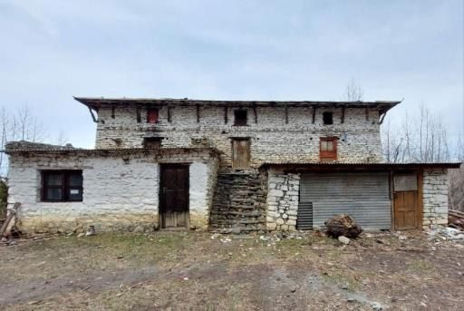
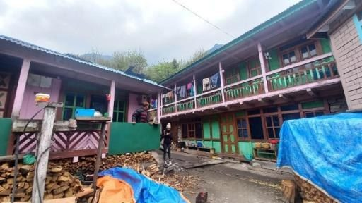

Work · Research and data
Baseline study of building energy use in Nepal
Field data on how buildings use energy across four climate zones, collected to inform passive design guidelines.

BEEN was a four-year, EU-funded initiative under the SWITCH-Asia Programme to improve energy efficiency in Nepal’s building sector. Before anyone could write guidelines, the project needed to know how buildings in Nepal actually use energy.
We provided the Team Leader, the Statistics Head and the Project Coordinator for the field study. The team trained more than 40 enumerators and surveyed homes, hotels and resorts, and offices from the plains of the Terai to high mountain settlements such as Chame and Muktichhetra.
The data on building design, construction materials and energy use now informs passive design guidelines, technical standards and energy-efficiency tools for the country.
What we did
- Literature review and case studies
- Coordination with partner municipalities
- Training of more than 40 enumerators
- Field data collection
- Cleaning and sorting data by building typology
- Analysis and final report


Contact
work
with us.
Tell us about the project you have in mind. We reply within two working days.